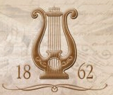

Saint Petersburg Conservatory [Introduction]: Saint Petersburg Conservatory is Russia's earliest music academy, with seven departments and ten major music majors, making it an ideal place for international music students. Introduction to the institution: The Saint Petersburg Conservatory is a higher education institution in Saint Petersburg, Russia, and is also the earliest music academy in Russia. The Saint Petersburg Conservatory...
Saint Petersburg Conservatory
[Introduction]: The Saint Petersburg Conservatory is Russia's earliest music academy, with seven departments and ten major music majors, making it an ideal place for international music students.

Introduction to the Institution
The Saint Petersburg Conservatory is a higher education institution in Saint Petersburg, Russia, and is also the earliest music academy in Russia. The Saint Petersburg Conservatory was founded in 1862 on the basis of the former Russian Music Association. Anton. Rubinstein was the founding initiator of the academy, its first artistic director, and the first piano professor.
The college has seven major departments
The academy has seven departments: Orchestra, Piano, Development, Conducting, Opera Performance (including ballet performance), Folk Instruments, Music Theory and History, and Composition. It also strives to provide vocational training, offering various opportunities for performance, composition, and conservatory research and teaching, as well as individual exercises such as solo performance, spiritual mastery training, and performances for the school or public. These are important parts of the academy's learning. Fees and tuition for individual lessons are paid to orchestral performers, singers, conductors, composers, arrangers, opera performers, and others.
Specialized Settings
The conservatory's specialties are divided into ten music departments and groups: Keyboard and Instrumental Department - Piano Group, Orchestra Department - String Group, Wind and Percussion Department - Composition Department - Music History Theory Department Group, Vocal Department Group - Choral Conducting Department Group, and Ethnic Instrumental Department The Saint Petersburg Conservatory offers preparatory classes, master's classes, doctoral programs, advanced classes, and masterclass classes.
Educational system
Preparatory Program: 1 year or 1.5 years
Expert: 5 years
PhD: 3 years
Start of the semester
The Conservatory of Music holds classes in two semesters each year: starting on September 1st and February 9th respectively.
Foundation Courses:(Five months, ten months) This class is designed for those preparing to enter the conservatory for further studies, as well as foreign students planning to pursue master's or doctoral programs. The preparatory course mainly focuses on professional and Russian language studies (or includes a theoretical course). Classes are primarily taught in Russian, with English as an auxiliary language.
Master's Program: The curriculum of this class integrates both bachelor's and master's courses, including: major courses, Western music history, Russian music history, and music theory, designed to train professional performers (singing, playing, conducting, etc.), composers, and music teachers. The course lasts five years (including a foundation course of six years in total).
PhD Program: This class is designed for students seeking further professional development. Those who have already obtained a master's degree may apply for study, with a duration ranging from two to three years depending on individual ability. Upon graduation, a diploma of 'Doctor of Music Arts' is awarded.
Advanced Training Classes: This course is specially designed for students who wish to further improve their professional skills and consolidate their professional experience. The course focuses on professional study and Russian: 3-4 hours of professional study per week, and 2-8 hours of Russian (each class 45 minutes). Study duration ranges from two months to two years, but only after completing more than six months of study in this class and passing relevant assessments will the institute award a globally recognized certificate.
Masterclass: The class is held twice a year: winter classes in January and February, and summer classes in June and July. Course content covers all majors, with no entry restrictions.
圣彼得堡音乐学院
【导读】：圣彼得堡音乐学院俄罗斯最早音乐学院，内设七个系别和十大音乐专业，是音乐专业留学生理想的殿堂。
院校介绍
圣彼得堡音乐学院位于俄罗斯圣彼得堡市的高等音乐教育院校，同时也是俄罗斯最早的音乐学院。圣彼得堡音乐学院创立于1862年，是在原俄罗斯音乐协会的基础上创建的。安东.鲁宾斯坦是学院的创立发起者，也是学院的第一任艺术总监和第一位钢琴专业教授。
学院七大系
学院下设七个系：如管弦系、钢琴系、发生学系、指挥系、歌剧表演系(包括芭蕾表演)，民间乐器系、乐理乐史、作曲系。这里还尽最大可能性提供职业训练，有各种表演、作曲、音乐学院研究和教学的机会，并且设置一些针对个人的练习，如独奏练习、精神掌握强化训练以及为学校或公众进行演出的机会，这些都是学院学习的重要部分，个人练习的费用和学费被付给管弦乐附的演奏者，歌唱者、指挥、作曲、编曲、歌剧演员等。
专业设置
音乐学院的专业学科分为十个音乐系、组：键盘器乐系一钢琴组、管弦乐系一弦乐组、管乐及打击乐组、作曲系、音乐历史理论系组、声乐系组、合唱指挥系组、民族器乐系组圣彼得堡音乐学院分预科班、硕士班、博士班、进修班及大师班。
学制
预备系：1年或1.5年
专家：5年
博士：3年
开学时间
音乐学院每年授课分为两个学期：分别于九月一日和二月九日开学。
预科班：(五个月、十个月)本班专为准备进入音乐学院进修者，及计划就读硕士班或博士班的外国学生所设置。预科班课程以专业和俄语的学习为主(或附带一门理论课程)。授课时以俄语为主，英语为辅助语言。
硕士班：本班学习内容系结合学士、硕士二部分课程为一体，包括：主修课、西洋音乐史、俄国音乐史及音乐理论等，为培养专业表演者(演唱、演奏、指挥等)、作曲者及音乐教师所设置。期间五年(含预科共六年)。
博士班：本班专为欲在专业上求更进一步发展的学生所设置之最高水准课程，已获硕士学位者可申请学习，学习期间二至三年不等，视个人能力而定，毕业后授予"音乐艺术博士'学位之文凭。
进修班：此课程专为欲更进一步提升专业水平，巩固专业经验的学生所设置。课程以专业学习和俄语为主：专业学习每周3-4时，俄语2-8课时(每课时45分钟)。学习时间自两个月至二年不等，唯在本班学习满六个月以上，并通过相关考核之后，本院方授予世界承认的证书。
大师班：本班每年兴办两次：冬季班一月、二月，暑期班六月、七月。课程内容涵盖各项专业，入班资格不设限。
English edition. Select 中文原文 to compare with the original Chinese article.
This article is edited and published by Liaoning Overseas Study Service Co., Ltd. The content is for study abroad planning reference only. Unauthorized reproduction is prohibited.
Information on policies, regulations, admissions brochures, and program fees is timely. Please refer to the latest releases from official institutions and institutions in various countries; For detailed verification, please Contact an advisor。